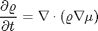
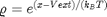
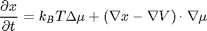

Contents
function ComputeDynamics(this,x_ic,mu)
Solves

in computational variable x: 

% Initialization optsPhys = this.optsPhys; optsNum = this.optsNum; kBT = optsPhys.kBT; if(isfield(optsPhys,'sigmaS')) R = optsPhys.sigmaS/2; else R = []; end D0 = optsPhys.D0; Diff = this.IDC.Diff; plotTimes = this.optsNum.plotTimes; nSpecies = this.optsPhys.nSpecies; M = this.IDC.M; Vext = this.Vext; Vext_grad = this.Vext_grad; IntMatrHI = this.IntMatrHI; IntMatrFex = this.IntMatrFex; Int_of_path = this.Int_of_path; Conv = this.IntMatrV2; Ind = this.IDC.Ind; getFex = str2func(['Fex_',optsNum.FexNum.Fex]); doHI = this.doHI; markVinf = (Vext == inf); if(strcmp(this.IDC.polar,'polar')) polarShape = true; else polarShape = false; end subArea = this.subArea; I = eye(M); eyes = [I I]; PtsCart = this.IDC.GetCartPts(); y1S = repmat(PtsCart.y1_kv,1,nSpecies); y2S = repmat(PtsCart.y2_kv,1,nSpecies); ythS = repmat(this.IDC.Pts.y2_kv,1,nSpecies); if(nargin < 2) x_ic = this.x_eq; mu = this.mu; end tic fprintf(1,'Computing dynamics ...'); if(isfield(optsNum,'PlotArea')) optsNumT = rmfield(optsNum,'PlotArea'); end [X_t,recEq,paramsEq] = DataStorage('Dynamics',... @ComputeDDFTDynamics,v2struct(optsNumT,optsPhys),[]); %true fprintf(1,'done.\n'); t_dynSol = toc; disp(['Dynamics computation time (sec): ', num2str(t_dynSol)]); %************************************************ %**************** Postprocess **************** %************************************************ nPlots = length(plotTimes); accFlux = X_t(:,1:nSpecies); X_t = X_t(:,nSpecies+1:end)'; rho_t = exp((X_t-Vext(:)*ones(1,nPlots))/kBT); X_t = reshape(X_t,M,nSpecies,nPlots); rho_t = reshape(rho_t,M,nSpecies,nPlots); flux_t = zeros(2*M,nSpecies,nPlots); V_t = zeros(M,nSpecies,nPlots); for i = 1:length(plotTimes) if(doHI) flux_t(:,:,i) = GetFlux_HI(X_t(:,:,i),plotTimes(i)); else flux_t(:,:,i) = GetFlux(X_t(:,:,i),plotTimes(i)); end V_t(:,:,i) = Vext + getVAdd(y1S,y2S,plotTimes(i),optsPhys.V1); end data = v2struct(IntMatrFex,X_t,rho_t,mu,flux_t,V_t); data.shape = this.IDC; if(this.doSubArea) data.Subspace = v2struct(subArea,accFlux); end if(~isfield(optsNum,'doPlots') ... || (isfield(optsNum,'doPlots') && optsNum.doPlots) ) figure PlotDDFT(v2struct(optsPhys,optsNum,data)); end function X_t = ComputeDDFTDynamics(params,misc) mM = ones(M,1); mM(Ind.finite) = 0; %| markVinf mM = repmat(mM,nSpecies,1); mM(markVinf(:)) = 0; opts = odeset('RelTol',10^-8,'AbsTol',10^-8,'Mass',diag([ones(nSpecies,1);mM])); [~,X_t] = ode15s(@dx_dt,plotTimes,[zeros(nSpecies,1);x_ic(:)],opts); end function dxdt = dx_dt(t,x) % ignore first row of entries. This is mass in subsystem x = x(nSpecies+1:end); x = reshape(x,M,nSpecies); mu_s = GetExcessChemPotential(x,t,mu); mu_s(markVinf) = 0; h_s = Diff.grad*x - Vext_grad; h_s([markVinf;markVinf]) = 0; dxdt = kBT*Diff.Lap*mu_s + eyes*(h_s.*(Diff.grad*mu_s)); if(doHI) rho_s = exp((x-Vext)/kBT); rho_s = [rho_s;rho_s]; gradMu_s = Diff.grad*mu_s; HI_s = ComputeHI(rho_s,gradMu_s,IntMatrHI); dxdt = dxdt + kBT*Diff.div*HI_s + eyes*( h_s.*HI_s ); end flux_dir = Diff.grad*mu_s; dxdt(Ind.finite,:) = Ind.normalFinite*flux_dir; dxdt(markVinf) = x(markVinf) - x_ic(markVinf); dxdt = D0.*dxdt; dxdt = [(Int_of_path*GetFlux(x,t))';dxdt(:)]; end function mu_s = GetExcessChemPotential(x,t,mu) rho_s = exp((x-Vext)/kBT); mu_s = getFex(rho_s,IntMatrFex,kBT,R) + ... Fex_Meanfield(rho_s,Conv,kBT); for iSpecies=1:nSpecies mu_s(:,iSpecies) = mu_s(:,iSpecies) - mu(iSpecies); end mu_s = mu_s + x + getVAdd(y1S,y2S,t,optsPhys.V1); end function flux = GetFlux(x,t) rho_s = exp((x-Vext)/kBT); mu_s = GetExcessChemPotential(x,t,mu); flux = -[rho_s;rho_s].*(Diff.grad*mu_s); if(polarShape) %then transform to cartesian corrdinates flux = GetCartesianFromPolarFlux(flux,ythS); end end function flux = GetFlux_HI(x,t) rho_s = exp((x-Vext)/kBT); rho_s = [rho_s;rho_s]; mu_s = GetExcessChemPotential(x,t,mu); gradMu_s = Diff.grad*mu_s; HI_s = ComputeHI(rho_s,gradMu_s,IntMatrHI); flux = -rho_s.*(gradMu_s + HI_s); end
end
The class DDFT_2D has no property or method named 'ComputeDynamics'.